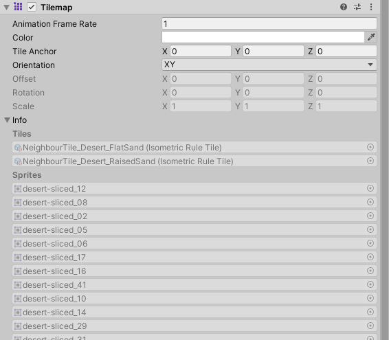

Experiencia de Juego en 2D
Mientras es famoso por sus capacidades en 3D, Unity también puede ser usado para crear juegos 2D. Las funciones familiares del editor están todavía disponibles, pero con adiciones útiles para simplificar el desarrollo en 2D.
 Escena vista desde un modo 2D
Escena vista desde un modo 2D
La característica que más se nota es el botón del modo en vista 2D en la barra de herramientas del Scene View. Cuando el modo 2D es activado, una vista ortográfica (ie, libre de perspectiva) va a ser establecida; la cámara ve a lo largo del eje X con el eje Y aumentando hacia arriba. Esto le permite visualizar la escena y poner objetos 2D fácilmente.
Los objetos gráficos en 2D son conocidos como Sprites. Los Sprites son nada más que unas texturas estándar pero hay varias técnicas para combinar y manejar las texturas sprites por rendimiento y conveniencia durante el desarrollo. Unity proporciona un Sprite Editor integrado para permitirle extraer gráficas sprites desde una imagen más grande. Esto le permite a usted editar un número de componentes de imagen dentro de una sola textura en su editor de imagen. Usted puede utilizar esto por ejemplo, para mantener los brazos, las piernas y el cuerpo de un personaje como elementos separados en una imagen.
Los Sprites son renderizados con un componente Sprite Renderer en vez de un Mesh Renderer usado con objetos 3D. Usted puede agregar esto a un GameObject mediante el menú de Components (Component > Rendering > Sprite Renderer o alternativamente, usted puede crear un GameObject directamente con un Sprite Renderer que esté ya adjuntado (menú: GameObject > 2D Object > Sprite). Adicionalmente, usted puede utilizar una herramienta Sprite Creator para hacerle lugar a imágenes 2D.
Unity cuenta con un motor de física separado para el manejo de la física en 2D con el fin de hacer uso de optimizaciones disponibles únicamente en 2D. Los components corresponden a los components de física estándar 3D como Rigidbody, Box Collider y Hinge Joint, pero con “2D” agregado al nombre. Entonces, los sprites pueden ser equipados con Rigidbody 2D, Box Collider 2D y Hinge Joint 2D. La mayoría de los components de física en 2D son simplemente versiones “aplanadas” del equivalente en 3D (eg, Box Collider 2D es un cuadrado mientras Box Collider es un cubo) pero hay unas pequeñas excepciones.
Declaracíon
public static bool Raycasy(Vector3 origin, Vector3 directrio, float maxDistance = Mathf.Infinity, int layerMask = DefaultRaycastLayers, QueryTriggerInteraction queryTriggerInteraction = QueryTriggerInteraction.UseGlobal);
Parámetros
| origin |
El punto de partida del rayo en las coordenadas del mundo. |
| direction |
La dirección del rayo. |
| maxDistance |
La distancia máxima que el rayo debe verificar para detectar colisiones |
| layerMask |
Máscara de capa que se utiliza para ignorar selectivamente a los colisionadores al lanzar un rayo. |
| queryTriggerInteraction |
Especifica si esta consulta debe alcanzar Desencadenadores. |
Devuelve
bool Devuelve true si el rayo cruza con un colisionador, de lo contrario false.
Descripción
Lanza un rayo, desde el punto origin, en dirección direction, de longitud maxDistance, contra todos los colisionadores de la escena.
Opcionalmente, puede proporcionar una LayerMask, para filtrar cualquier Colisionador con el que no esté interesado en generar colisiones
Especificar queryTriggerInteraction le permite controlar si los colissionadores trigger generan o no un hit, o si se debe utilizar el global Physics.queriesHitTriggers ajuste.
Nota: Los Raycast no detectarán Colisionadores para los cuales el origen de Raycast esté dentro del colisionador. En todos estos ejemplos se utiliza FixedUptade en lugar de Update.
El componente Tilemap es un sistema que almacena y maneja activos de mosaico para crear niveles 2D. Transfiere la información requerida de los mosaicos colocados en él a otros componentes relacionados, como el Tilemap Render y el Tilemap Collider 2D. Este paquete no está incluido en la instalación predeterminada de Unity Editor de forma predeterminada, y deberá descargar el paquete 2D Tilemap Editor a través del Administrador de paquetes.
Al crear un Tilemap, el componente Grid se incorpora automaticamente al Tilemap y actúa como guía para diseñar Tiles en el Tilemap.
Paara crear, modificar y elegir los mosaicos para pintar en un mapa de mosaicos, use la Paleta de mosaicos(menú: Ventana > 2D Palete de mosaicos) y sus herramientas.

Ventada de propiedad Tilemap
| Animation Frame Rate |
La velocidad a laque Unity reproduce animaciones de mosaico. Al aumentar o disminuir esto, se cambia la velocidad en el factor equivalente (por ejemplo, si lo estableces en 2, Unity reproduce animaciones de mosaico al doble de velocidad). |
| Color |
Seleccione un color para aplicarlo como tinte a los mosaicos de este mapa de mosaicos. Establece en blanco (color predeterminado) para que Unity represente los mosaicos sin tinte. |
| Tile Anchor |
Introduzca la cantidad (en celdas) a lo largo de los ejes XYZ para desplazar las posiciones de anclaje de mosaico en el mapa de mosaicos. |
| Orientation |
Seleccione la orientación de los mosaicos en el mapa de mosaicos. Utilice esto si necesita orientar los mosaicos a lo largo de un plano específico. |
| XY |
Unity orienta los Tiles a lo largo del plano XY. |
| XZ |
Unity orienta los Tiles a lo largo del plano XZ |
| YX |
Unity orienta los Tiles a lo largo del plano YX |
| YZ |
Unity orienta los Tiles a lo largo del plano YZ |
| ZX |
Unity orienta los Tiles a lo largo del plano ZX |
| ZY |
Unity orienta los Tiles a lo largo del plano ZY |
| Custom |
Seleccione esta opción para habilitar la configuración de orientación personalizada a continuación |
| Position |
Establezca el desplazamiento de posición de la orientación personalizada. Esta opción está deshabilitada de forma predeterminada y está habilitada cuando la Orientación del Tilemap se establece en Personalizado. |
| Rotation |
Establezca la rotación de la orientación personalizada. Esta opción esta deshabilitada de forma predeterminada y está habilitada cuando la Orientación del Tilemap se establece en Personalizado |
| Scale |
Establezca la escala de la orientación personalizada. Esta opción está deshabilitada de forma predeterminada y está habilitada cuando la Orientación del Tilemap se establece en Personalizado. |
| Info |
Expanda esto para mostrar los Asssets utilizados en el Tilemap. |
| Tiles |
Muestra una lista de los Assets de Tiles utilizados en el mapa de mosaicos. |
| Sprites |
Muestra una lista de Sprites utilizados en el Tilemap. |
- Contenido de la página y captura de pantalla actualizados para 2021.1
- Contenido de la página y capturas de pantalla actualizados para 2020.1
- 2D Tilemap Editor ya no se incluye con la instalación de Editor y debe descargarse desde el Administrador de paquetes. Año 2019.2
- Funcionalidad isométrica de Tilemap agregada en Unity 2018.3
- Funcionalidad hexagonal de Tilemap agregada en Unity 2018.2
- Tilemaps agregados en 2017.2